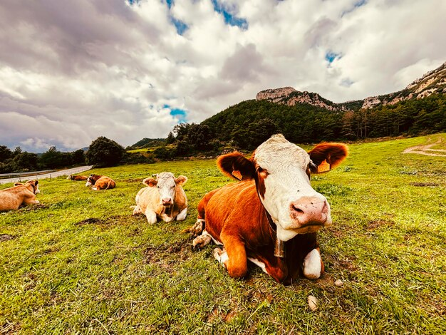
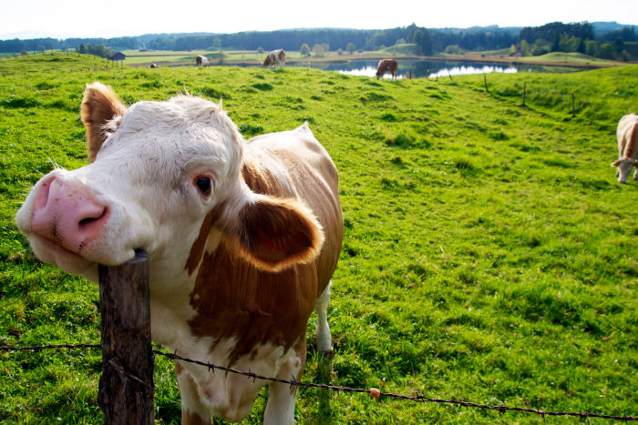
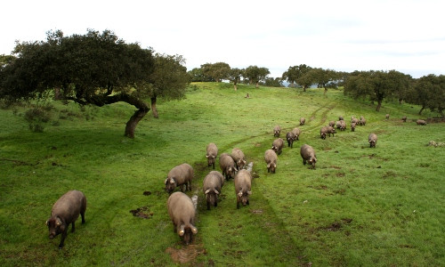
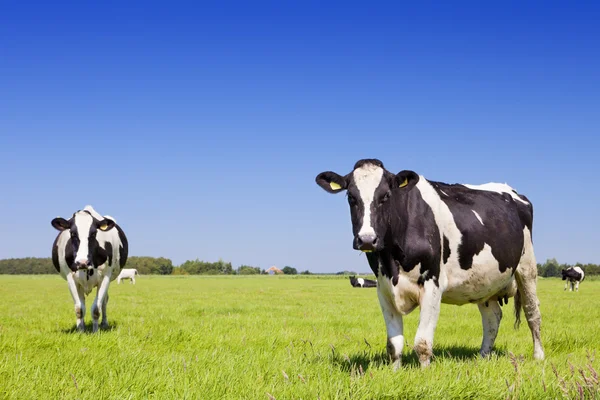
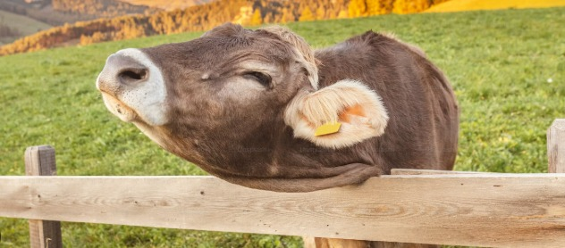
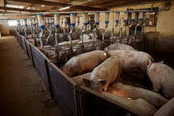
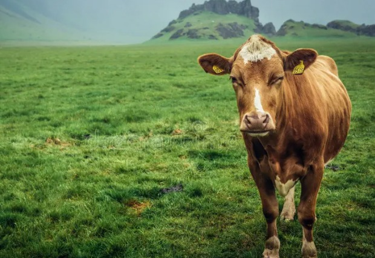
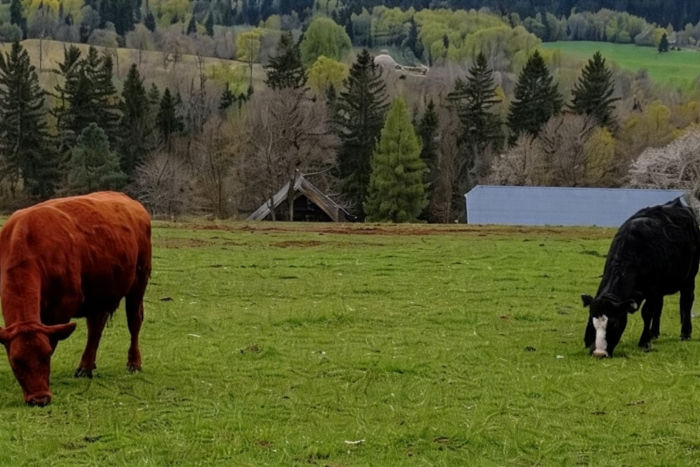
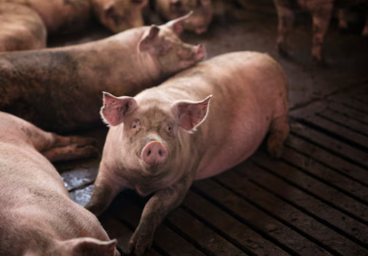
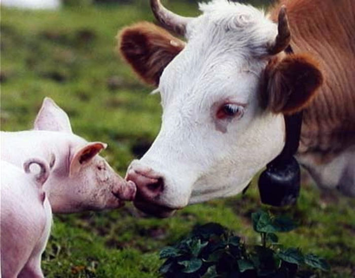

Calidad desde el origen
Un buen producto comienza con prácticas cuidadosas y atención a cada etapa del proceso.
Creemos que la calidad del producto final empieza con un manejo adecuado, controlado y responsable desde el origen.

En D' La Finca San José damos importancia a la crianza y al manejo responsable, buscando un ambiente controlado y un seguimiento constante que ayude a mantener la calidad y confianza en nuestros productos.
Estas imágenes representan el tipo de ambiente rural y controlado que inspira nuestro trabajo diario.












Un buen producto comienza con prácticas cuidadosas y atención a cada etapa del proceso.
El orden y la limpieza forman parte esencial de la confianza que damos a nuestros clientes.
Buscamos fortalecer continuamente nuestro manejo y presentación para ofrecer lo mejor.